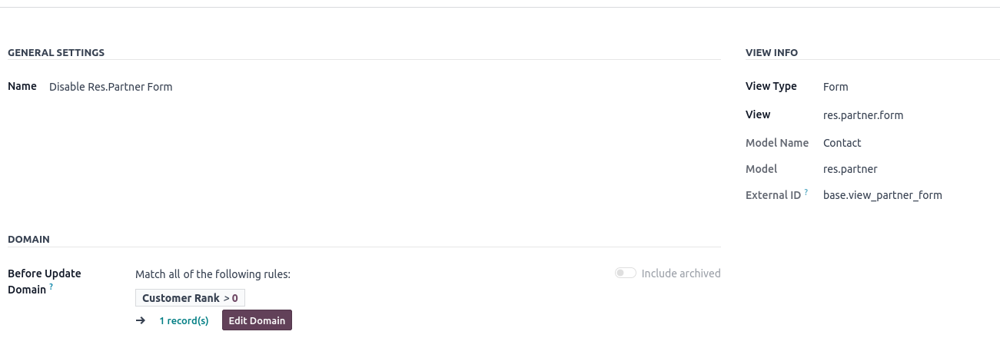

This module disables the form click for any model in Odoo. You can choose the model to disable and specify a domain to restrict form disabling only to records that meet specific data criteria.
After installing the disable_form module, follow these steps to configure it: 1. Navigate to Settings -> Disable Form Settings. 2. Click Create to add a new disable configuration. 3. Select the view you want to disable. 4. Define a domain to specify the records for which you want to disable the form. 5. Save your changes.
Imagine you want to disable the edit form for records in the res.partner model where the customer_rank field is greater than 0.
Navigate to the Disable Form module from the homepage.
Save the configuration.

From now on, the edit form will be disabled for all partners who are customers.
This module is maintained by Rapsodoo.